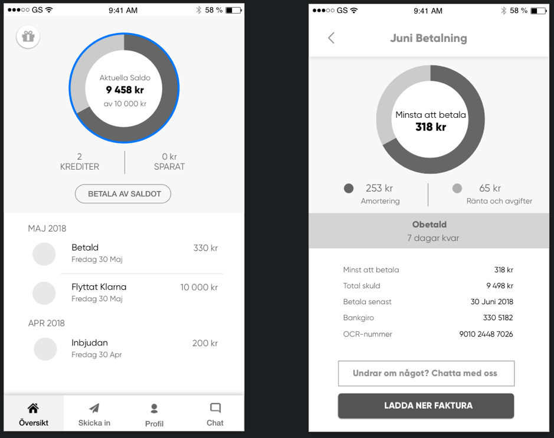
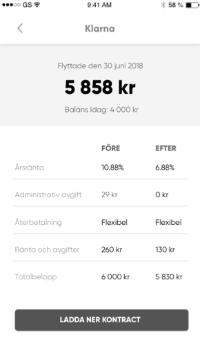
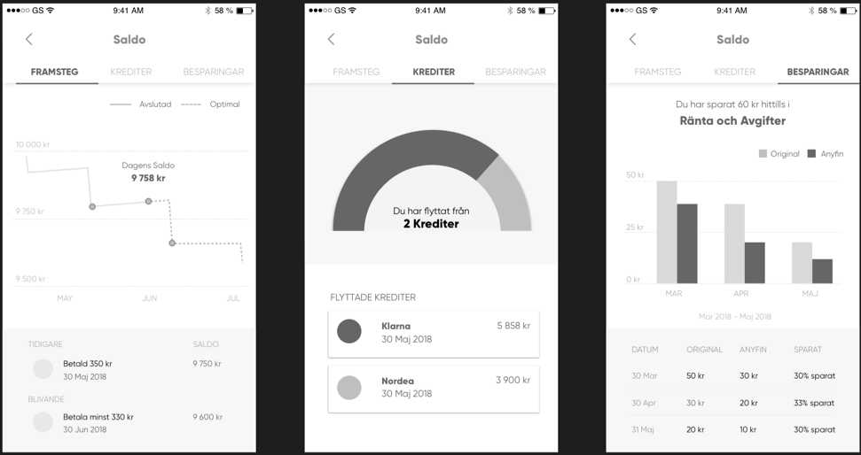

UX Design of a Mobile App

Growth Intern
March 2018 - July 2018
Anyfin, Sweden
UX Design of a Mobile App
March 2018 - July 2018
Anyfin, Sweden
Anyfin is a fin-tech startup which enables its customers to refinance their existing loans from other creditors to a new loan with a lower interest rate. My aims during the internship were to
I identified the following stages in the journey of any potential customer. For each stage, I listed the customer’s goals, the company’s goals, how the customer thinks and feels in that stage and possible opportunities to overcome their pain points.
I created several prototypes to brainstorm how to help the potential customers visualize how they might benefit from refinancing and help the existing customers how their loan is being paid off each month. In the case of loan payments, it is essential to understand how much is being contributed to the principal (amortization) and how much is contributed to the interest payment. This would enable customers to plan their next payments and be financially empowered.
Based on comments from existing customers in interviews and feedback from other stakeholders (development team and CTO), I came up with wireframes and flow for the mobile app along with the Growth lead. Here are a few of the screens which were later passed on to the designer for the hi-fi prototypes.
The following images show the dashboard of invoices and payments to help existing customers get an overview of what’s their current loan balance and what is the minimum payment towards the loan for the month.
Comparison of interest rates and monthly payment rates with their previous creditor and after they refinanced it with Anyfin.
Payment of invoices: Visualizing payments by customers and how much they have contributed to paying off their loan each month.
